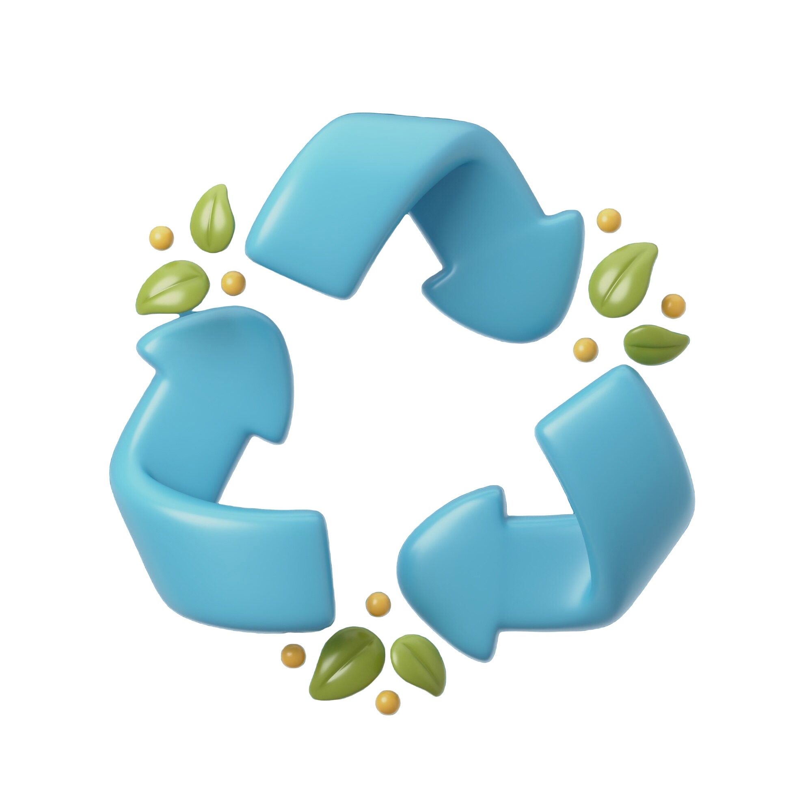

Le problème mondial des déchets plastiques est devenu une préoccupation majeure pour les gouvernements, les entreprises et les citoyens. En 2023, la production de déchets plastiques a atteint des niveaux alarmants, affectant l’environnement et la santé publique. La gestion de ces déchets varie selon les pays, en fonction de leurs infrastructures, de leur économie et de leur sensibilisation aux enjeux écologiques.
Dans ce projet, nous explorerons des données sur la production de déchets plastiques en 2023, incluant la quantité produite par pays, les sources de pollution, les taux de recyclage, la production par habitant, et les risques pour les zones côtières.
À travers des graphiques variés tels que des cartes géographiques, des graphiques en secteurs (pie charts) et d'autres formes de visualisation, ce projet mettra en lumière les tendances mondiales et régionales de la gestion des déchets plastiques.

Les données utilisées pour ce projet proviennent de Kaggle, et offrent une analyse détaillée de la production et de la gestion des déchets plastiques dans 165 pays pour l'année 2023. Il couvre plusieurs aspects de la gestion des déchets plastiques, notamment les volumes de production, les taux de recyclage et les évaluations des risques environnementaux liés aux déchets côtiers. Ces informations permettent de mieux comprendre les défis mondiaux posés par les déchets plastiques et les efforts déployés par les différents pays pour les gérer.
| Pays | Production totale de plastique | Source princpale | Taux de recyclage |
|---|---|---|---|
| Chine | 59.08 | Emballage industriel | 29.8 |
| États-Unis | 42.02 | Emballage Consommateurs | 32.1 |
| Inde | 26.33 | Biens de consommation | 11.5 |
| Japon | 7.99 | Emballage électronique | 56.1 |
Ce jeu de données fournit des informations détaillées sur la gestion des déchets plastiques dans différents pays pour l'année 2023. Les variables présentes dans ce jeu de données sont de deux types principaux : nominales et numériques, permettant une analyse quantitative et qualitative des déchets plastiques produits par les pays.
À partir des données collectées, nous pouvons observer que la Chine, les États-Unis et l'Inde , figurent parmi les plus grands producteurs de plastique, représentant une proportion significative des déchets mondiaux. Ces pays sont en effet les plus grands consommateurs de plastiques dans le monde, en raison de leur population élevée, de leur industrialisation avancée et de leur forte consommation de produits plastiques.
Le bubble chart permet de visualiser de manière efficace cette hiérarchie en termes de volume de déchets plastiques produits, en utilisant la taille des bulles pour refléter l'ampleur de la production. Plus la taille de la bulle est grande, plus le pays génère de plastique. Cette représentation graphique permet non seulement d’identifier les pays principaux, mais aussi de saisir rapidement les différences de production entre eux.
Dans le cadre de notre analyse des déchets plastiques mondiaux en 2023, nous avons examiné les principales industries responsables de la production de plastique. À travers un graphique en camembert, nous avons pu visualiser de manière claire et concise les secteurs les plus grands contributeurs à la pollution plastique. Les résultats montrent que les emballages industriels, les emballages pour les consommateurs, et les biens de consommation sont les trois principales sources de plastique dans le monde.

Le bar chart présenté met en lumière les taux de recyclage et de pollution plastique des 12 pays les plus pollueurs en matière de déchets plastiques en 2023. Ce graphique révèle une tendance préoccupante : certains des plus grands producteurs de déchets plastiques ont des taux de recyclage faibles, ce qui aggrave leur impact environnemental. Par exemple, des pays comme la Chine et les États-Unis montrent un écart significatif entre la quantité de plastique qu'ils produisent et ce qu'ils parviennent à recycler.
Cependant, il est intéressant de noter que le Japon fait figure d’exception dans ce classement. En effet, il parvient à maintenir un certain équilibre entre sa production de déchets plastiques et son taux de recyclage.
Chaque barre représente un pays, avec une comparaison claire entre deux mesures clés : le taux de pollution plastique (mesuré par la production de déchets plastiques) et le taux de recyclage national. Ces deux métriques sont essentielles pour évaluer à la fois la contribution des pays à la crise mondiale des déchets plastiques et leurs efforts pour gérer cette situation.
Pourquoi un Bar Chart ?
Le choix d’un bar chart pour cette visualisation est particulièrement pertinent car il facilite la comparaison directe entre les deux variables (taux de pollution et taux de recyclage) pour chaque pays. Les barres juxtaposées permettent aux utilisateurs de repérer rapidement les disparités entre les taux de pollution plastique et de recyclage. Cette clarté rend le bar chart idéal pour analyser ces différences de manière concise et accessible, tout en permettant de tirer des conclusions visuelles claires.